DANCING WISPS ABOVE THE LAKE OF TRUTH
"Looking into my reflection, only a broken, meager wisp flickers back. But look at you: untouched by all worldly blemishes."

BASIC INFORMATION
Threshold Consciousnesses: Lison
Dreamer Classification: (R1)2-42-2
Hazard Type: Minor Psychological
Failure Types: Ejection
VERTICE CLUSTER

CONTAINMENT GUIDELINES
GUIDELINE I: (R1)2-42-2 is to be filtered and cleaned daily to preserve its pristine quality. Assessment of (R1)2-42-2's salinity, pH level, and mineral levels should be done on a bi-daily basis, and logged appropriately.
GUIDELINE II: When The Radiant appears before (R1)2-42-2, personnel are to enter containment and conduct a health check on the being, recording blood pressure, heart rate, weight, and physical examination results daily.
GUIDELINE III: When The Broken and The Radiant perform courtship, the following must be done: all lights in the containment unit are to be shut off, the artifical sky is to be turned on, and all windows are to be closed. Observation through the camera system is permitted.
REPLICATION TIPS
Note: There are two possible scenarios that take place upon replication. You will be in the perspective of either The Broken or The Radiant; tips will reflect this accordingly (ie. TIP B#: Replication as The Broken | TIP R#: Replication as The Radiant).
TIP BI: Your eyes heavily creak open, and you find yourself laying next to a pristine pond isolated without an impenetrable thicket of trees.
TIP RI: Your eyes snap open. You soar high above an infinite canopy of leaves and bark, searching for something lying within.
TIP BII: Stumble around and get a grip of your surroundings. The water is what catches your eyes: untouched by all worldly imperfections. A perfect reflection stares back at you.
TIP RII: Wind rushes through your air and pelts your face. Scanning the land below, you spot a secluded lake; you feel drawn to it, as you admire the glistening stars projected on its surface.
TIP BIII: As you sit by the lake, you sense the presence of another. Turn around, and stare in awe at the blinding glow of the arrived stranger.
TIP RIII: There's someone else here. First impressions matter, don't they? Gracefully land, for your entrance must be perfect. You must appear like the star that you are to this resting stranger.
TIP BIV: The dazzling star in front of you offers you their wing. You accept their offer, and are swept into a dance.
TIP RIV: Reach out to them after they're done admiring you. Once they accept your offer, sweep them up into a dance.
TIP BV: Emotion grows as your bodies move in total unison. This dance is as much their's as it is your's. Just pay no mind to how surprisingly rough their feathers feel or the wavering in their eyes. You must be imagining things.
TIP RV: Emotion grows as your bodies move in total unison. This dance is as much your's as it is their's. Just pay no mind to how they're demeanor reflects your inner fears, or the wonder in their eyes you wish you still had. You must be imagining things.
TIP VI: And no matter what, do not gaze into the lake. Neither are you are ready for the truth. Replication complete.
ESCAPE INFORMATION
Upon escape, The Radiant and The Broken will appear in a random location within 100m of their containment unit. Personnel should prioitize locating the whereabouts of both wisps. Ensure that all personnel who have located one of the wisps are made aware of the location of the other.
The wisp under the title of The Broken poses no physical threat to personnel, and can be easily identified by its torn up wings and slow movements.
The wisp under the title of The Radiant poses a slight physical threat to personnel. The Radiant can be identified by the bright glow of its body, and is the only wisp which is capable of flight out of the two.
The Broken is to be escorted to The Radiant. Personnel who located The Broken are to form a defensive circle around the being, walking it to the location of the Radiant. Personnel should prioitize The Broken's safety, less the asset be damaged. If the Broken collapses or falls unconsious, personnel are to either carry it, or transport it using a stretcher if accessible.
The Radiant is to be escorted to the Broken. The Radiant flies and wanders through the facility frantically; it is advised to keep the personnel escorting The Broken informed of its changing location. Doors to the room in which The Radiant has entered are to be closed and locked to effectively restrict its movement. Personnel in the same room as The Radiant are take cover or remain low to the floor to avoid being hit by The Radiant's insistent swoops and dives.
Both wisps will return to containment once they have been reunited with eachother. A health check-up on the The Radiant is to be done following an escape.
DREAMING ALTERATION 
Hidden Heart [Left Arm]
Obtain Rate: Dance with The Radiant or The Broken for three minutes and thirty seconds, perfectly executing every step and motion, while maintaining eye contact with the other the entire time.
Variant Dreaming: Uniform, mobility orientated. Flight is achievable under certain conditions.
Variant Waking: Slight floatiness while falling.
RESEARCH STATUS
Observation complete. Replication and maintenance reserved for Level 1 employees and for employee training.
BLACK PROJECTS
Star Crossed Lovers [Pilot]: Proposal to sell a video membership to audiences, in which they are permitted to watch the dances between The Broken and The Radiant.
Status: Rejected
"Who could resist not watching a dance so full of emotion and vigor? Everybody likes a good drama, no?"
- Kasyade, Black Projects Overseer.
“What are we, some kind of soap opera? Besides, having public eyes on this will only be an administrative nightmare for Azeizel.”
- Penumei, Archival Overseer.